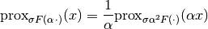

proximal_arg_scaling¶
- odl.solvers.nonsmooth.proximal_operators.proximal_arg_scaling(prox_factory, scaling)[source]¶
Calculate the proximal of function F(x * scaling).
- Parameters:
- prox_factorycallable
A factory function that, when called with a step size, returns the proximal operator of
F- scalingfloat or sequence of floats or space element
Scaling parameter. The permissible types depent on the stepsizes accepted by prox_factory. It may not contain any nonzero imaginary parts. If it is a scalar, it may be zero, in which case the resulting proxmial operator is the identity. If not a scalar, it may not contain any zero components.
- Returns:
- prox_factoryfunction
Factory for the proximal operator to be initialized
Notes
Given a functional
 , and scaling factor
, and scaling factor  this is
calculated according to the rule
this is
calculated according to the rule
where
 is the step size.
is the step size.For reference on the identity used, see [CP2011c].
References
[CP2011c] Combettes, P L, and Pesquet, J-C. Proximal splitting methods in signal processing. In: Bauschke, H H, Burachik, R S, Combettes, P L, Elser, V, Luke, D R, and Wolkowicz, H. Fixed-point algorithms for inverse problems in science and engineering, Springer, 2011.